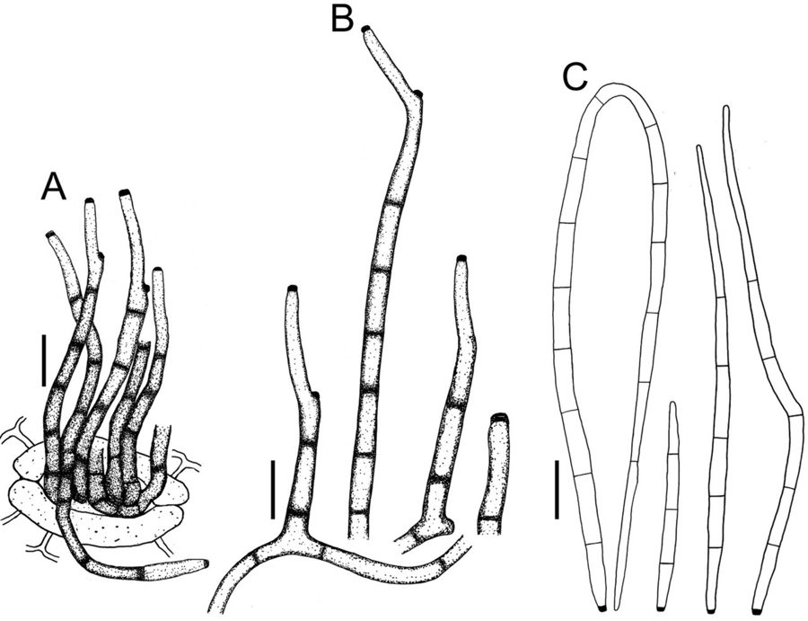

पत्ती धब्बाCercospora Leaf Spot of Pulses
Cercospora canescens · Mycosphaerellaceae · FNG-0033

- Scientific name वैज्ञानिक नाम
- Cercospora canescens Ellis & Martin
- Family कुल
- Mycosphaerellaceae
- Hindi हिंदी
- पत्ती धब्बा
- Local names स्थानीय नाम
- patti dhabba, leaf spot, cercospora
- Status here यहाँ की स्थिति
- native
- Movement आवागमन
- Resident, here all year
- Known from कहाँ दर्ज
- Others have published records from the Basti–Ayodhya districts बस्ती–अयोध्या के ज़िलों से दूसरों के प्रकाशित अभिलेख
- IUCN IUCN
- not evaluated
- Review समीक्षा
- audited and independently read
When to look कब देखें
Expected mainly in February, March, April. मुख्यतः फ़रवरी, मार्च, अप्रैल में अपेक्षित।
पत्ती धब्बा / Cercospora Leaf Spot of Pulses
Cercospora canescens Ellis & Martin — Mycosphaerellaceae
पत्ती धब्बा — अरहर, मसूर, चने और मटर की पत्तियों पर सर्दियों के अंत में (फरवरी-मार्च) छोटे, गोल, भूरे-काले धब्बे जो बड़े होकर पत्ती को काला कर देते हैं। संक्रमित पत्तियाँ गिर जाती हैं, पौधा कमजोर हो जाता है, और दानों की पैदावार में 20–30 प्रतिशत नुकसान हो सकता है। दाल खेतों में यह सबसे आम रोग है, खासकर ठंड के मौसम में।
Quick Identification त्वरित पहचान
| Feature | Description |
|---|---|
| Lesion shape | Circular to slightly angular spots, 2–8 mm diameter |
| Lesion color | Dark brown to black center with a grey or light brown halo |
| Halo presence | Distinct grey or purplish halo surrounds the dark center |
| Spot arrangement | Spots scattered on leaf surface; may coalesce into larger necrotic areas |
| Leaf damage | Severe infection causes yellowing and premature defoliation |
| Stem lesions | Rarely, lesions appear on petioles and stems, causing cankers |
| Spore structures | Conidiophores and spores visible with microscope as dark, thin structures |
Field tip: Examine chickpea or lentil leaves in March. Look at both leaf surfaces. Circular brown-black spots with a pale halo that rub off as grey dust (spores) indicate Cercospora. Heavily affected plants have yellowing leaves and sparse foliage.
हिंदी — कैसे पहचानें: दाल की पत्ती पर गोल, काले-भूरे निशान, चारों तरफ़ हल्का रंग। फरवरी-मार्च में। निशान को रगड़ने से धूल आता है।
Morphology and Symptomatology आकृति और लक्षण
Fungal structures (visible with microscope):
| Structure | Appearance |
|---|---|
| Conidiophore | Thin, dark brown, septate; emerges from leaf surface through stomata |
| Conidium (spore) | Hyaline to pale brown, filiform (thread-like), 40–80 × 3–5 µm |
| Lesion tissue | Necrotic (dead); mycelium visible as brown network in collapsed cells |
Disease progression:
- Infection: Spores enter through stomata (natural leaf pores)
- Colonization: Mycelium grows inter- and intra-cellularly; toxins cause necrosis
- Sporulation: 7–10 days post-infection, conidiophores emerge and produce spores
- Defoliation: Severe infection causes leaves to yellow and fall
Life Cycle / Phenology जीवन चक्र
In eastern UP (winter pulse crop: October–April):
| Stage / Month | Event | Notes |
|---|---|---|
| October–November | Pulse crop sown; plant growth begins | Inoculum from previous season's crop debris initiates infection on young leaves |
| December–January | Vegetative growth; cool, dry conditions; disease progresses slowly | Lesions visible but infection rate slow due to cool temperatures |
| February–March | PEAK DISEASE PERIOD — Cool, moist weather with dew and light rains favors sporulation; secondary infections accelerate | Spore production prolific; secondary infections spread rapidly |
| March–April | Crop matures; leaves yellow and fall; disease less severe as plant senesces | Infected leaf litter harbors the fungus for next season |
| May onwards | Harvest; infected crop residue left in field or used as animal feed | Sclerotia and mycelium in soil and crop debris survive until next season |
हिंदी — जीवन चक्र: पिछली फसल की पराली से शुरू होता है। सर्दी में धीरे बढ़ता है। फरवरी-मार्च में तेजी से फैलता है। अप्रैल में फसल पक जाती है तो रोग कम हो जाता है।
Ecology and Substrate पारिस्थितिकी और आधार
Plant pathogen: Cercospora canescens is a facultative pathogen that overwinters in crop residue and soil.
Moisture and temperature requirements:
- Optimal for infection: 15–25°C, leaf wetness (dew, rain)
- Rapid sporulation: 20–22°C with high humidity; spores are wind-dispersed
- Stress to fungus: >28°C slows sporulation; very dry conditions inhibit spore germination
- Survival: Mycelium survives in infected crop residue for one season; spores do not survive dry conditions
Host range: Primarily pulses (chickpea, lentil, pea, faba bean); occasionally other crops.
Transmission:
- Primary: Inoculum from previous season's infected crop debris
- Secondary: Wind-borne spores spread from plant to plant; wet leaves facilitate infection
- Spore release: Occurs in early morning as dew dries
Agricultural / Human Relevance कृषि प्रासंगिकता
Economic impact:
- Yield loss: can be heavy in a bad season, depending on variety, timing and weather.
- Severity: In susceptible varieties with cool, wet weather, losses can be severe
- Dietary importance: Pulses are a major protein source in the region; disease reduces local production
Management — in order of priority:
- Resistant varieties (MOST EFFECTIVE):
- Chickpea: PBG 1, JG 11, JAKI 316 (all have resistance)
- Lentil: PL 639, Mohan, DPL 15 (have moderate resistance)
- Use certified seed from recognized seed farms
- Cultural practices:
- Field sanitation: Remove infected crop residue; do not use for animal bedding if disease was severe
- Crop rotation: Avoid planting pulses in the same field for 2 years if disease was severe
- Sowing date: Early sowing (mid-October) allows crop to escape late-season disease peak
- Plant spacing: Adequate spacing reduces humidity
- Fungicide spray (supplementary):
- Spray timing: Monitor crops in February; seek advice from the Krishi Vigyan Kendra once symptoms are spreading
- Fungicide choice: Mancozeb or Chlorothalonil; apply 2 times at 10-day intervals
- Cost: ₹300–400 per hectare
- Caution: Use only if disease exceeds economic threshold; avoid over-reliance
- Integrated approach:
- Use resistant variety
- Remove previous season's infected residue
- Sow early (mid-October)
- Monitor and spray if disease threshold is exceeded
हिंदी — रोकथाम: रोधक किस्म बोओ। पुरानी पराली निकालो। अक्टूबर में जल्दी बोओ। फरवरी में देखना; दाग दिखें तो छिड़काव करो।
Expected Locally स्थानीय रूप से अपेक्षित
Not a field record. Written from published accounts for eastern Uttar Pradesh. No confirmed local sighting yet — if you have seen it, that is what the atlas needs.
अभी तक स्थानीय पुष्टि नहीं। यह विवरण प्रकाशित स्रोतों से है, किसी अवलोकन से नहीं।
Cercospora leaf spot is expected in Basti and Ayodhya districts wherever pulses are grown, particularly chickpea and lentil. Disease is most severe in fields that follow pulse crops and where previous season's infected residue is present. Cool, moist February–March weather favors the disease. Susceptible varieties can show severe defoliation by March, while resistant varieties remain largely unaffected. GBIF holds published records from the wider Awadh–Purvanchal plain.
Distribution वितरण
Global range: Found in tropical and subtropical pulse-growing regions; particularly important in the Indo-Gangetic plain.
In India: Present in all pulse-growing states; endemic in northern and central India.
In Uttar Pradesh: Found in all pulse-growing districts; eastern UP experiences consistent disease pressure due to cool winter conditions.
In Basti district / eastern UP: Expected in every pulse field during the winter crop season; severity depends on variety and weather.
Research Questions शोध प्रश्न
- Which pulse varieties are grown in your village, and which show the most Cercospora leaf spot? / आपके गाँव में कौन-सी दाल की किस्मों में सब से ज़्यादा पत्ती धब्बा लगता है? — Survey 10 farmers; compare symptoms across varieties.
- In February–March, what percentage of leaves on susceptible varieties show Cercospora lesions? — Examine 20 plants per field; count affected leaves.
- Does early sowing (October 15) result in less disease than late sowing (November 15)? — Compare two farmers' fields with same variety.
- How many seasons does the fungus survive in crop residue left in the field? — Plant pulses in a field with buried infected residue; monitor disease progression.
- Do farmers remove pulse residue after harvest, or leave it in the field for animals? — Survey 5 farmers on their post-harvest practices.
Similar Species मिलती-जुलती प्रजातियाँ
| Disease | How to tell apart | हिंदी |
|---|---|---|
| Alternaria Leaf Spot (Alternaria spp.) | Concentric rings or target patterns in lesions; larger spots (5–15 mm) | केंद्र में वलय, बड़े निशान |
| Botrytis Leaf Blight (Botrytis spp.) | Grey moldy growth on lesions; affects flowers and pods, not just leaves | भूरा फफूंदी, फूलों पर भी |
| Rust (various Uromyces spp.) | Yellow to orange pustules on leaf underside; no dark halo | नारंगी या पीली धूल, पत्ती के नीचे |
Field rule: Circular dark brown-black spots with pale halo on pulse leaves, visible spore dust (grey) when rubbed, in February–March = Cercospora.
Taxonomy & Classification वर्गीकरण
Original description. Cercospora canescens was described by Ellis and Martin in 1892 in American Naturalist, vol. 26, p. 654.
Subspecies. No subspecies are formally recognized; some variation in host preference within the species.
Family and order placement. Order Mycosphaerellales, family Mycosphaerellaceae. Cercospora is a large genus of leaf-spotting fungi with many plant pathogens.
Phylogenetic notes. Cercospora canescens is a complex of related species; molecular work has identified cryptic species within the original C. canescens on different hosts.
IUCN status rationale. Not evaluated. As an obligate plant pathogen, its conservation status is not applicable.
Photo Gallery फोटो गैलरी
Photos needed आवश्यक फोटो
- [ ] Pulse leaf (chickpea or lentil) with circular spots and halo (पत्ती पर गोल निशान)
- [ ] Close-up of lesion showing spore structures (निशान का बड़ा रूप)
- [ ] Severely affected plant with defoliated lower leaves (पूरा पत्ता गिरा हुआ)
No photos yet — add field photos to media/species/cercospora_leaf_spot_of_pulses/ and run node scripts/sync_photos.js.
References संदर्भ
- Ellis, J.B. & Martin, B.M. (1892). American Naturalist, vol. 26, p. 654. [original description]
- Akem, C. (1990). Evaluating lentil (Lens culinaris Medik.) germplasm for resistance to Cercospora leaf spot. Euphytica 46(1): 19–25.
- Sharma, M. & Ghosh, R. (2016). Cercospora leaf blight of chickpea: epidemiology and management. Legume Perspectives 18: 22–25.
- Indian Council of Agricultural Research — Directorate of Pulses Research (2021). Management of Pulse Diseases in India. ICAR-DPR, Kanpur.
- National Institute of Plant Health Management (2019). Pulse Disease Management Guide. NIPM, Hyderabad.
- GBIF Occurrence Data — Cercospora canescens, India (2026).
Source file: species/fungi/molds/cercospora_leaf_spot_of_pulses.md